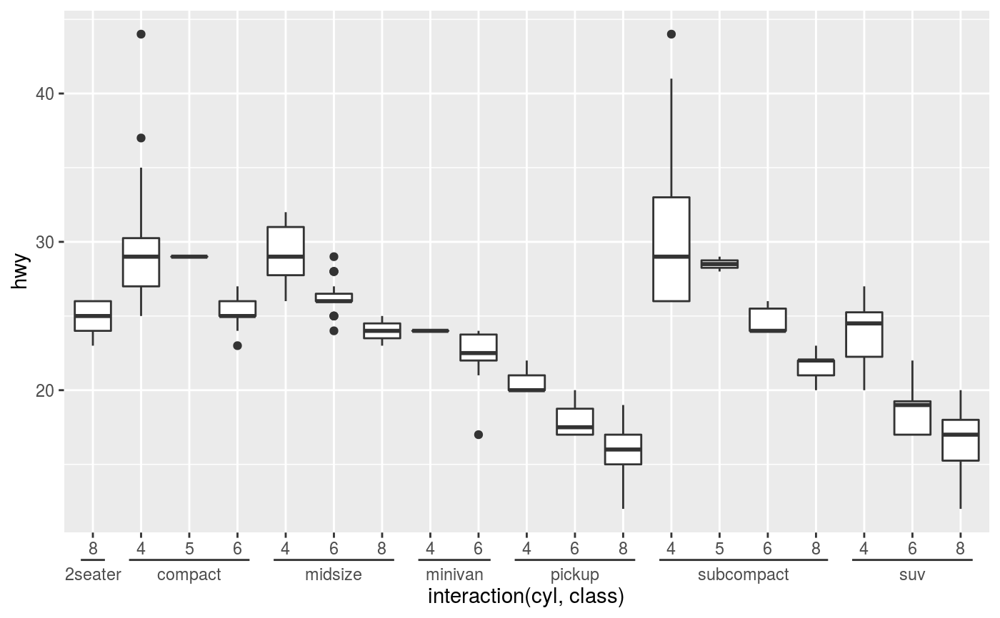
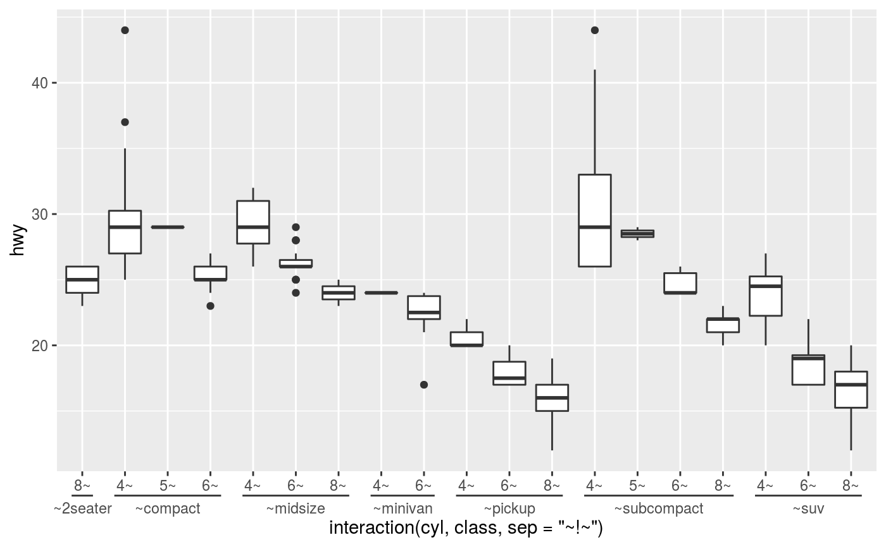
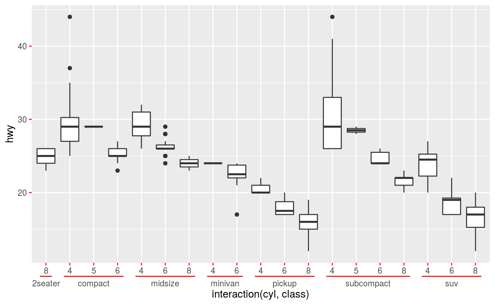
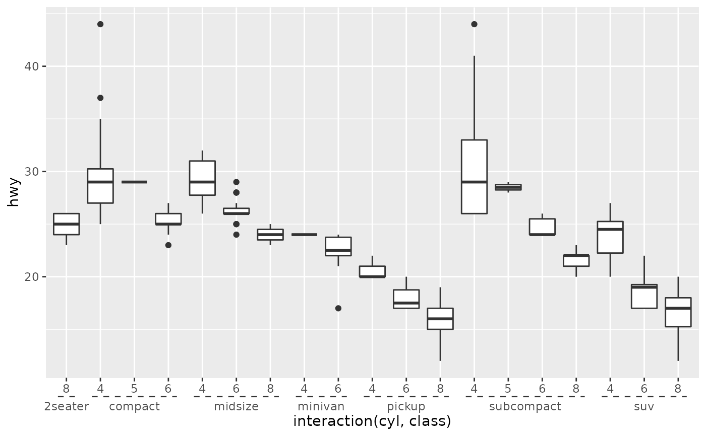

Discrete position scales containing interacting factors can be visualised more clearly with a nested axis guide. Nested axis guides seperate labels based on a delimiter and groups identical later labels, indicating the grouping with a line spanning the earlier labels.
guide_axis_nested( title = waiver(), check.overlap = FALSE, angle = NULL, n.dodge = 1, order = 0, position = waiver(), delim = waiver(), extend = 0.5 )
| title | A character string or expression indicating a title of guide.
If |
|---|---|
| check.overlap | silently remove overlapping labels, (recursively) prioritizing the first, last, and middle labels. |
| angle | Compared to setting the angle in |
| n.dodge | The number of rows (for vertical axes) or columns (for horizontal axes) that should be used to render the labels. This is useful for displaying labels that would otherwise overlap. |
| order | Used to determine the order of the guides (left-to-right, top-to-bottom), if more than one guide must be drawn at the same location. |
| position | Where this guide should be drawn: one of top, bottom, left, or right. |
| delim | A |
| extend | A |
A axis_nested guide class object.
The guide itself makes no effort to group and order labels. To get nice groupings, consider re-ordering the levels of factor variables, or try setting the 'breaks' argument of a scale appropriately.
guide_axis for the classic axis
documentation.
weave_factors for an alternative to
interaction().
Other axis-guides:
guide_axis_logticks(),
guide_axis_minor()
# The defaults are suited for interaction variables ggplot(mpg, aes(interaction(cyl, class), hwy)) + geom_boxplot() + scale_x_discrete(guide = "axis_nested")# Control where labels are cut with the delim argument ggplot(mpg, aes(interaction(cyl, class, sep = "~!~"), hwy)) + geom_boxplot() + scale_x_discrete(guide = guide_axis_nested(delim = "!"))# The nesting lines inherit looks from axis ticks ggplot(mpg, aes(interaction(cyl, class), hwy)) + geom_boxplot() + scale_x_discrete(guide = "axis_nested") + theme(axis.ticks = element_line(colour = "red"))# The looks can be controlled independently by setting `ggh4x.axis.nestline` ggplot(mpg, aes(interaction(cyl, class), hwy)) + geom_boxplot() + scale_x_discrete(guide = "axis_nested") + theme(ggh4x.axis.nestline = element_line(linetype = 2))